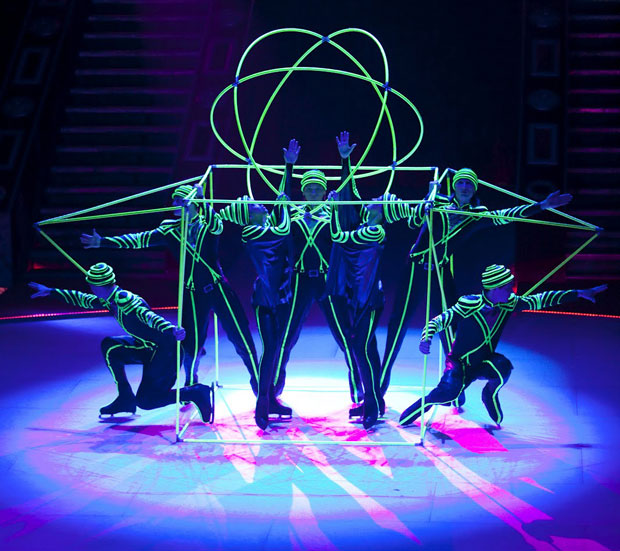

| Home |
Moscow - Circus on Ice
Dia 12/05 - sábado - 21h Desde sua estreia, em Bruxelas (1964), a companhia vem conquistando uma sólida reputação junto ao público e à crítica internacional, graças à surpreendente e inovadora combinação entre o universo circense, o ballet clássico tradicional e a patinação artística. Fundado por um dos mais importantes diretores de dança artística da extinta União Soviética, o |
|||
coreógrafo Arnold Gregoryevich, o Circo hoje é dirigido por Natalia Abramova e reúne 35 bailarinos especializados em patinação artística. Ingressos: Classificação 12 anos |
|||

Galeria
|
|
 |
|
Geek Theory© 2012